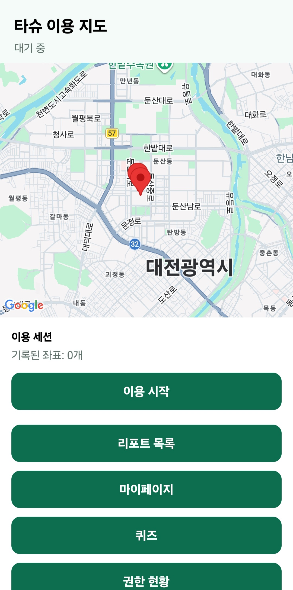
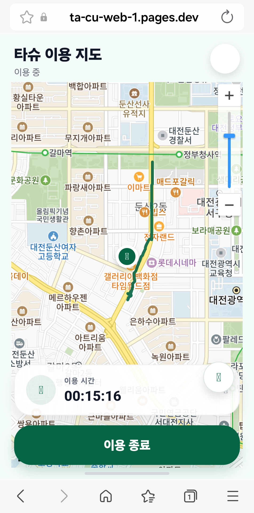
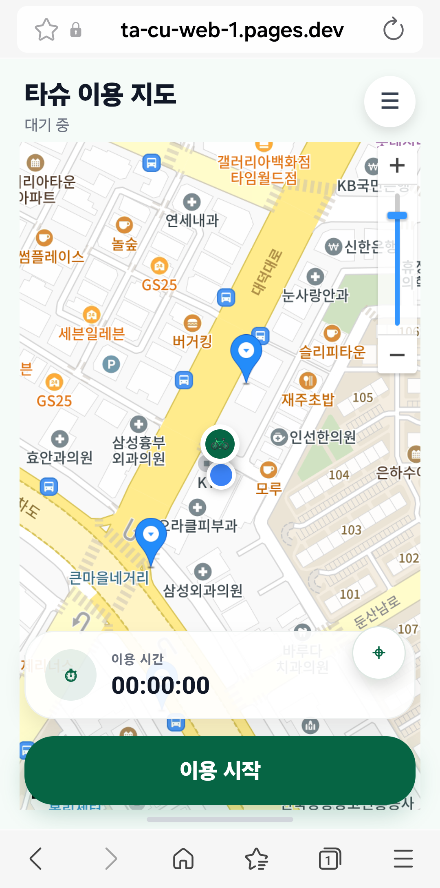
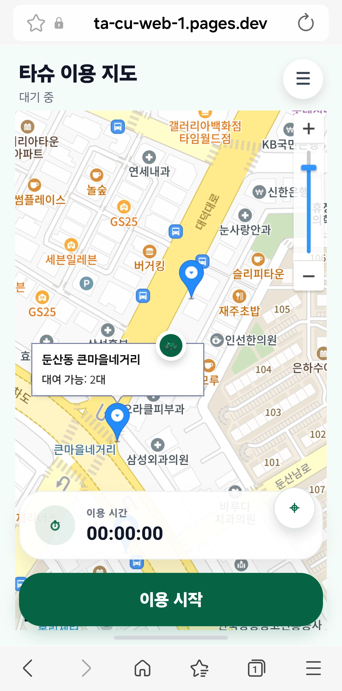

TA-CU
핵심 기능 1 — 타슈 지도·주행 추적
실시간 타슈 대여소 지도
공공데이터포털 타슈 Open API와 연동하여
카카오맵 위에 전체 대여소 및 대여 가능 자전거 수 표시
GPS 기반 주행 경로 추적
이용 시작부터 종료 시점까지 사용자의 이동 경로를
지도 위에 실시간 Polyline으로 시각화하여 제공
데이터 품질: Accuracy 30m 필터
GPS 신호의 정확도(Accuracy)가 30m 이상인 오차 데이터는 자동 제외하여,
실제 이동 거리와 탄소 절감량 계산의 신뢰도 확보




▲ 타슈 대여소 마커 및 실시간 이용 시간 표시 화면
4